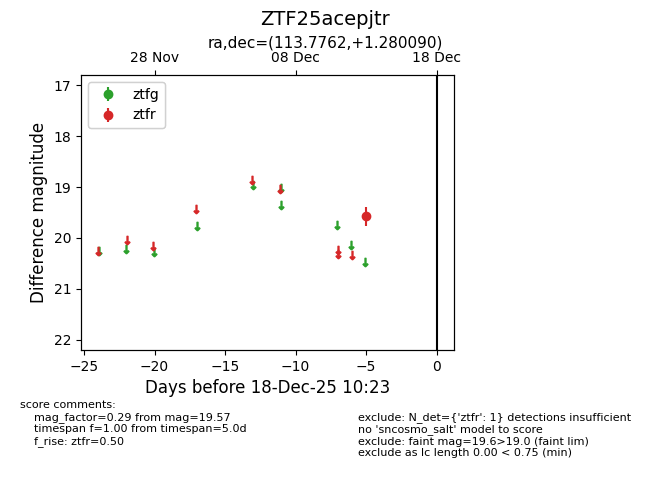
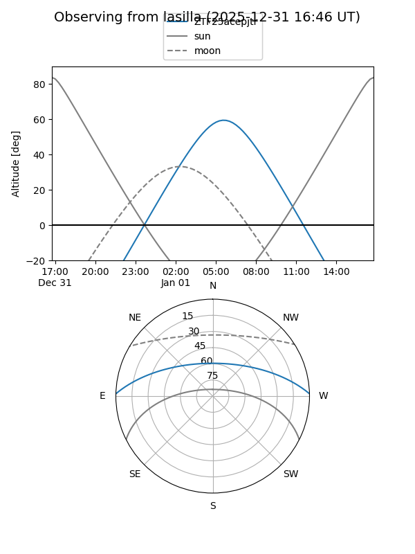

ZTF25acepjtr
Target ZTF25acepjtr at 2025-12-31 16:59
Aliases and brokers:
FINK:
Lasair:
ALeRCE:
alt names
ZTF25acepjtr (ztf,fink_ztf)
Coordinates:
equatorial (ra, dec) = 113.7762,+1.28009
equatorial (HMS+DMS) = 07:35:06.30,+01:16:48.32
galactic (l, b) = (216.8046,+10.29363)
Flags:
Photometry:
last ztfg=20.47, ztfr=19.57
1 ztfg, 1 ztfr detections
Lightcurve

Visibility


Additional plots